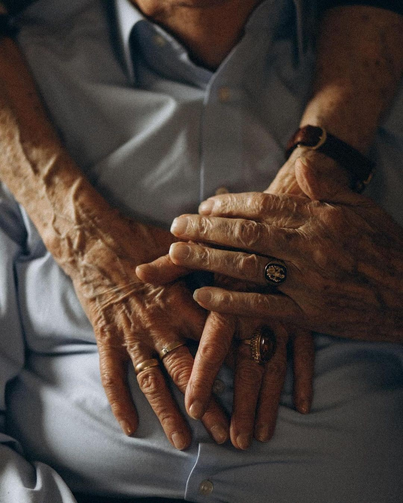
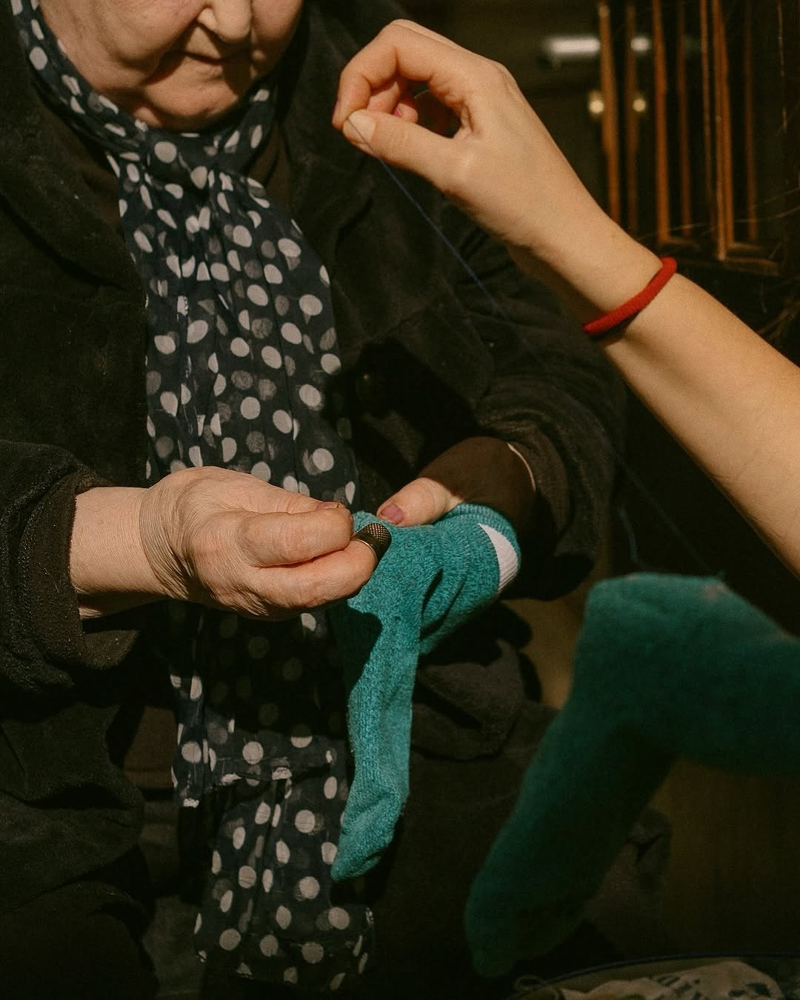

A Nossa Missão
A nossa missão é proporcionar cuidados personalizados e humanizados a pessoas em situação de dependência, permitindo-lhes viver com dignidade, conforto e segurança no ambiente familiar que conhecem e apreciam. Apoiamos idosos, pessoas com mobilidade reduzida, doentes crónicos e famílias em momentos de necessidade, respeitando as suas rotinas e promovendo a sua autonomia.
Acreditamos que o cuidado vai além do físico: é um compromisso emocional, ético e profissional. Por isso, a nossa equipa é formada por profissionais qualificados e apaixonados pelo que fazem, garantindo um atendimento atento, transparente e sempre disponível.


Os Nossos Valores
- Humanização: Tratamos cada pessoa com respeito, empatia e atenção, promovendo relações de confiança e proximidade.
- Excelência: Comprometemo-nos a oferecer serviços de alta qualidade, através de uma equipa competente e em constante formação.
- Autonomia: Valorizamos a independência dos nossos clientes, apoiando-os na realização das suas atividades diárias com segurança e dignidade.
- Personalização: Adaptamos os nossos serviços às necessidades e preferências individuais de cada pessoa, garantindo soluções únicas e eficazes.
- Transparência: Mantemos uma comunicação clara e honesta com clientes e familiares, assegurando confiança e satisfação.
- Responsabilidade Social: Contribuímos para o bem-estar da comunidade, promovendo a inclusão social e o respeito pelos direitos humanos.